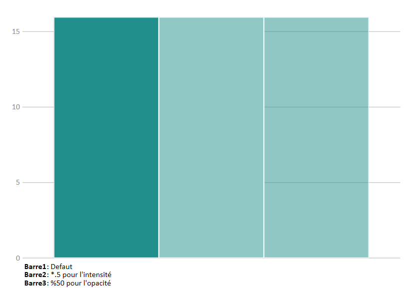
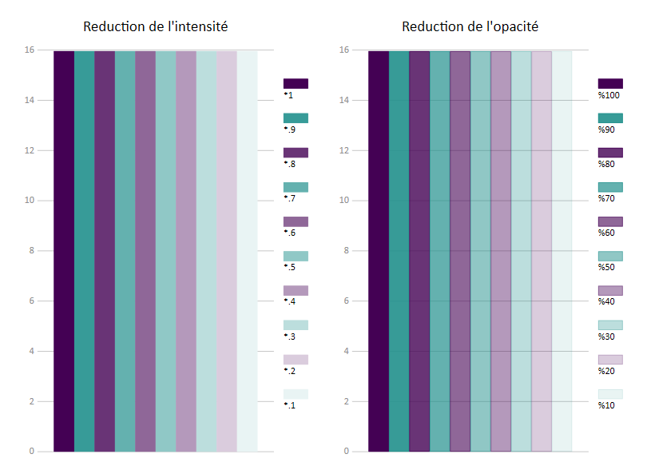
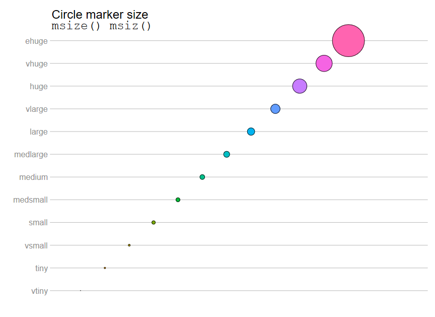
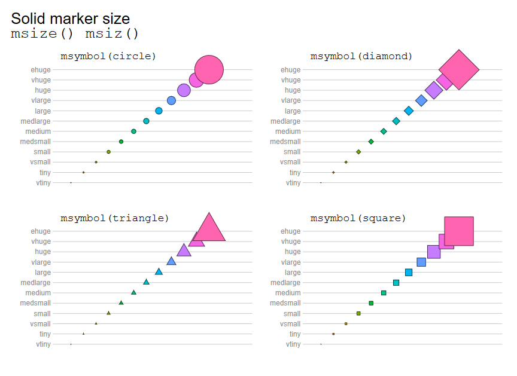
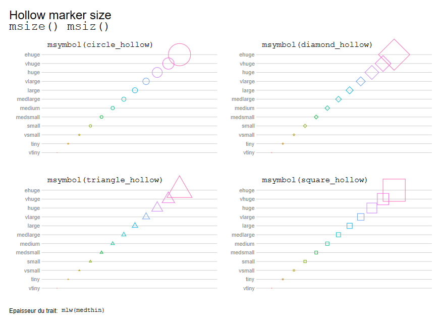
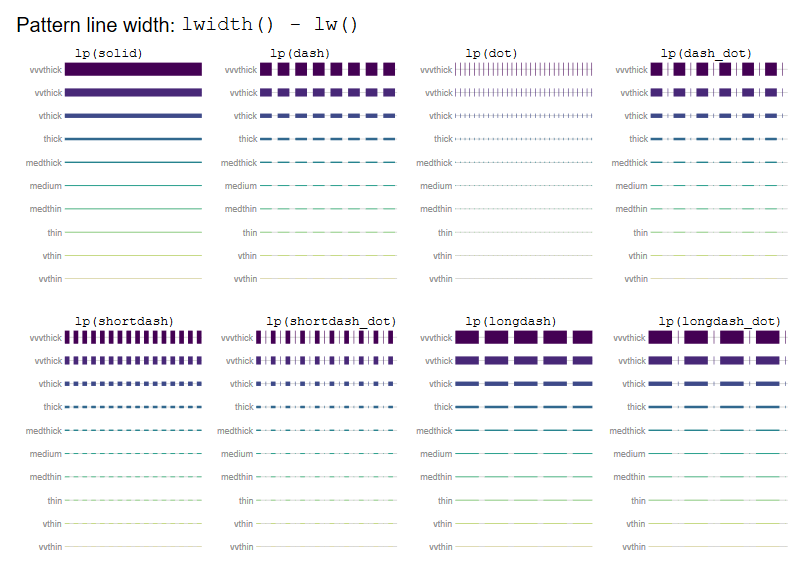
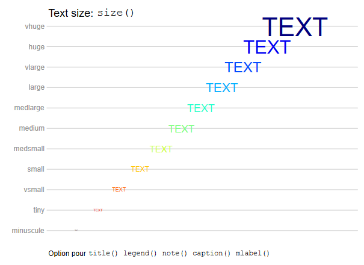
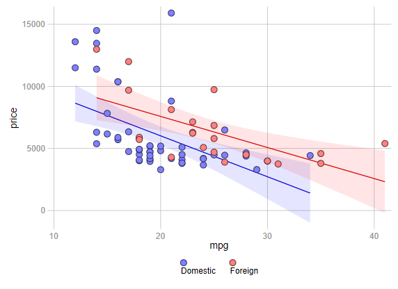
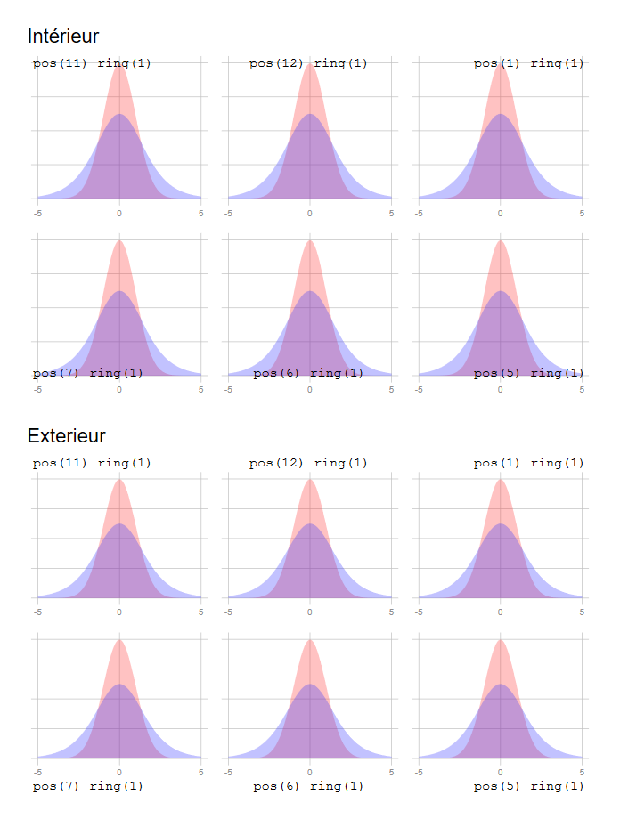

FORMATION STATA
Marc Thevenin
Pour commencer:
- Ouvrir une session Stata
- Ouvrir un log de session:
file=>log=>begin - Dans la fenêtre command de l’environnement principal, exécuter la ligne
sysuse auto
sysuse auto.dta1 Présentation
1.1 Historique de Stata
L’entreprise Stata Corp Lp a été fondée par W.Gould. Il est toujours à la tête de l’entreprise.
- Première version (sous MS Dos) en janvier 1985.
- Première version Windows en 1995 (Stata 4).
- La version la plus récente est la 16 (printemps 2019).
1.2 STATA à l’Ined
Version 14 Windows déployée, les maj vers la version 16 achetée.
Version 15 SE sous Linux (serveur margaux.
Petit rappel pour l’Ined: Quel que soit le logiciel choisi sous environnement Windows (SAS v9.4 ou Stata) vous avez accès à une version de l’autre application sous Linux via le serveur Margaux (SAS Studio ou STATA v15 SE).
A l’Ined, 2 types de versions Windows mise à disposition (selon les besoins).
Version SE: Standard Edition
- Nombre d’observations: 2.14 milliards
- Nombre de variables dans les bases: 32 767
- Nombre de variables RHS (limite nombre de colonnes des matrices: 10998)
Version IC: version bridée
- Nombre d’observations: 2.14 milliards
- Nombre de variables dans les bases: 2048
- Nombre de variables RHS (limite nombre de colonnes des matrices): 798)
Il existe également la version MP (Multiple Process) plus puissante: 120000 variables, 20 milliards d’observations).
1.3 Les ressources
1.3.1 Les ressources externes
Les manuels édités par STATA. Certains sont disponibles au GED [http://www.stata.com/bookstore/books-on-stata]
Stata Journal, la revue trimestrielle éditée par Stata [http://www.stata-journal.com ]. Depuis 2015 accès total aux versions PDF (via portail GED)
Une chaîne Youtube [http://www.youtube.com/user/statacorp/videos?view=0] qui propose des tutoriels via les manips par les boites de dialogue.
Un forum particulièrement actif (https://www.statalist.org/) [En anglais seulement]
Site de l’UCLA: https://stats.idre.ucla.edu/stata/ https://stats.idre.ucla.edu/stata/modules/
1.3.2 Les ressources internes
Le manuel de Stata est directement intégré au logiciel. Pour y accéder à partir du menu :
help => PDF documentationPour une instruction, on peut obtenir son aide en tapant dans la fenêtre command de l’environnement principal help command.
help summarizeLes pages d’aides
En haut de la fenêtre (sous title), on peut accéder directement à la section du PDF en cliquant sur le lien (idem pour les options).
L’accès aux aides est également possible à partir des bo?tes de dialogue (voir plus bas).
L’aide comprend généralement:
- le nom de la commande
- le lien vers l’entrée du manuel (si commande officielle)
- la description de la syntaxe
- le détail des options
- des exemples avec éventuellement une exécution directe (voir avec
help tw) les informations sauvegardés temporairement (jusqu’à l’exécution d’une autre commande) => stored results.
L’instruction
findit nom_commandpermet d’obtenir la liste de toutes les ressources disponibles d’une commande, internes ou externes. Exemple:findit fitstat
1.4 Warning: compatibilité entre les versions
Assez régulièrement, des probl?mes de compatibilité entre les versions de Stata se sont posés. Cela affecte la lecture des bases entre les différentes versions du logiciel. C’est le cas entre la version 14 et les versions antérieures (dont la version 13 qui date de 2012).
Version 14 (idem 15,16): refonte total du système d’encodage vers le standard UTF8.
Les versions inférieures ne peuvent pas ouvrir les bases, qui doivent être enregistrées avec une commande particulière (saveold) sous Stata14-15-16. Les accents ne sont pas lu après cette conversion, et ce qui nécessite d’exécuter un programme pour les convertir (au secours!!!!).
A l’Ined, depuis le déploiement de la version 14 et le passage à la version 15 Linux, il n’y a plus de problème. Attention toutefois pour les collaborations avec l’extérieur (version 13 encore largement utilisée).
1.5 Les users packages
Stata fonctionne avec un double système de commandes officielles et de commandes externes (idem R).
Commandes externes (user package):
Il s’agit d’instructions créees par les utilisateurs
Ces instructions couvrent le data management et l’analyse statistique (descriptive, modélisation, graphiques)
Même syntaxe que les instructions officielles
La liste (triée par année) de ces instructions se trouve à cette adresse [http://ideas.repec.org/s/boc/bocode.html]. Elle n’est pas exhaustive, seulement celles sur le dépôt de Stata (autres dépôts: université, institut de recherche, et les git)
Installation d’une commande externe
Pour télécharger un package, on peut utiliser la ligne de commande:
ssc install nom_commande, replaceExo
- [1] Accéder à l’aide (pdf) de l’instruction
tabulate. Faire un tableau croisé entre la variable foreign et rep78 - [2] Installer le package externe
findname, exécuterfindname t*et chercher les variables de type chaine de caractère (string)
1.6 Points forts et points faible selon MT
Points forts
L’interface et son interactivité
La simplicit? du langage de base. Très bonne courbe d’apprentissage
Accès aux instructions/packages externes. Même syntaxe que l’officielle (mais warning sur la certification des packages).
Les variables systèmes de comptage.
Automatisation des programmes via les macro variables et les boucles. Intuitif.
Paramétrisation poussée d’une session avec l’édition d’un fichier
profile.do
Points faibles
Problèmes de compatibilités entre les versions, noms d’instructions qui peuvent changer entre les versions
Une seule base en mémoire lors de la session : obligation de sauvegarder pour en ouvrir une autre (avec option clear). Mais possibilité de contourner cette faiblesse. MAJ v16: implémentation d’un système de
frame
*Aspect des outputs sommaires. Des packages externes comblent en partie ce problème. Idem pour les graphiques
- Bien que l’interface soit de très bonne qualité, il n’est pas possible d’ancrer l’éditeur de programme dans l’interface principale (en la substituant à la fenêtre command par exemple)
Faux problème (du point de vue de SAS)
Absence de librairie temporaire: Un système de trash box est possible (+ création automatique d’un log de session). Voir avec MT
Chargement de plusieurs répertoires (libname). Idem voir avec MT pour la solution avec les macro variables +
frameà partir de la version 16
2 L’environnement
2.1 Les (principaux) types de fichier
Les bases de données: .dta
L’éditeur de programme : .do (.ado pour la programmation de commandes)
Le log de session : .smcl ou .log (conversion possible en .txt, .doc ou .pdf)
Les graphiques : .gph (+ enregistrement en format image: png, jpg, svf…)
Les fichiers d’aides: .sthlp
2.2 Où passer ses instructions ?
Dans l’éditeur de programme (.do ou .ado ou écritue d’un fichier d’aide)
Dans la fenêtre “Command” de l’environnement principal
Par les menus (ouverture d’une boîte de dialogue). On récupéré la syntaxe de l’instruction directement dans l’interface principale, et par copier-coller dans l’éditeur de programme. Plutôt pratique.
2.3 L’interface principale

Boite output
Affiche les commandes exécutées et les résultats
Boite review
C’est un log de toutes les instructions passées par la fenêtre command
En cliquant de dessus, l’instruction est de nouveau affichée dans la fenêtre command
Avec un clic-droit on peut copier, supprimer les instructions. Les instructions en rouge déclarent celles avec une erreur
Les instructions passée par l’éditeur de programme ne sont reportée
Boite variables
Liste les variables présentent dans la base chargée avec éventuellement leur label
En cliquant dessus, là ou les variables sont affichées dans la fenêtre command
Avec un cliqu-droit, une ou plusieurs variables peuvent être copiées, conservées ou supprimées
Boite properties
Pour les variables affiche leurs propriétés: nom, label, format, type….
Si le cadenat est délocké, on peut modifier ces propriétés (voir variable manager). Le code qui exécute la modification est affichée dans la fenêtre command et la boîte review
2.4 Menus et raccourcis

Menus (boîtes de dialogue)
- File: gestion des fichiers => création, ouverture, import/export…
- Edit: utile pour la modification des préférences (couleurs interface, thèmes graphique)
- Data: manipulation des données
- Graphics: création de graphiques
- Statistics: instructions stat: descriptifs, modèles
- User: accès à vos boîtes de dialogue programmée en java
- Windows: activation des boîtes de l’interface principale
- help: infos sur le logiciel et accès à des ressources (internes et liens)
On peut accéder directement à une boîte de dialogue avec la commandedb nom_commande
db logitRaccourcis (dans l’ordre de gauche à droite)
- Ouverture d’un fichier
- Enregistrement de la base de données active
- Impression de la fenêtre output
- Ouverture d’un log
- Ouverture de la fenêtre d’aide
- Ouverture de l’éditeur de graphique (modification d’un graphique créé)
- Création ou ouverture de l’éditeur de programme (.do .ado . sthlp)
- Ouvre la base de données active en mode édition
- Ouvre la base de données active en mode lecture
- Ouvre le variable manager
- Déblocage du défilement de l’output pendant l’exécution
- Arrête l’exécution d’un programme
2.5 L’éditeur de programme

2.5.1 Soumettre un programme ou un bloc de programme
- On ne sélectionne aucune ligne: tout le programme est exécuté
- On sélectionne une partie du programme: seul le bloc est exécuté

execute (do): les commandes et les résultats sont affichés dans l’output de l’interface principaleexecute quietly (run): les commandes et les résultats ne sont pas affichés dans l’output de l’interface principale
2.5.2 delimiter
Par défaut une ligne = une instruction (#delimit cr).
Stata ne comprend pas la deuxième ligne de:
keep X1 X2
X3 X4Peut-être contourné dans un programme pour écrire des instructions longue sur plusieurs lignes avec l’instruction #delimit ;
#delimit ;
keep X1 X2
X3 X4;
tabulate X1;S’applique tant qu’on ne repasse pas à #delimit cr
La solution la plus utilisée est /// à la fin de la ligne.
keep X1 X2 ///
X3 ///
X4
tabulate X12.5.3 Les commentaires
Si le commentaire est sur une seule ligne
* commentaireSi le commentaire est sur une ligne en suivant une instruction
instruction // Commentaire Si le commentaire est sur plusieurs lignes
/* commentaire 1
commentaire 2 */2.5.4 Interactions entre l’interface principale, les boîtes de dialogue et l’éditeur de programme
=> Démonstration pendant la formation
3 Le langage Stata
3.1 La syntaxe générique
Remarque sur les crochets:
A ma connaissance, à l’exception des pondérations il n’y a pas d’utilisation de crochets dans la syntaxe des commandes officielles. Dans les fichiers d’aide, et pour cette formation, ils indiquent des expressions optionnelles d’une ligne d’instruction.
* Forme concise de la syntaxe STATA pour une instruction portant sur des variables
command varlist [, options ]Exemple : tabulate var1 var2, nofreq row
Ce qui ce traduit par: produire un tableau croisé entre var1 (en ligne) et var2 (en colonne) en affichant les % en ligne
- Forme générique de la syntaxe STATA
[prefix:] command varlist [type_weight=var] [ expression conditionnelle, options]Expression conditionnelle (sélection): if (sélection de valeurs) ou in (sélection d’observations)
Exemple : bysort var3: tabulate var1 var2 if var4==1, nofreq col
Ce qui ce traduit par: pour chaque valeur de var3, produire un tableau croisé entre var1 et var2 si var4=1, avec les % en colonne.
Si la commande implique une base, le nom de la base est généralement précédée de using (sauf pour les instructions officielle d’ouverture/sauvegarde):
command using nom_base [,options]3.2 Autres langages pris en charge
interne
- Programmation d’une commande (création d’un .ado) avec des éléments de langage dédié
- Langage matriciel (MATA)
- Editeur de texte (SMCL) pour rédiger les aides ou paramétrer la forme des outputs (une horreur)
- Création de boites de dialogue (proche du Java)
Externe
- Via une commande externe (
rsource), on peut exécuté du R - Débuit la version 16 on peut programmer en Python avec Stata. Une série de fonctions python (paquet
SFI) permettent d’utiliser les deux langages de manière interactive
- Intégration du langage markdown pour produire des rapports en html ou pdf. Egalement possibilité de générer des documents word ou excel avec des commandes dédiées. L’intégration de latex est également possible via une commande externe. Toutes ces possibilité me semble nettement en deçà de ce qui est réalisable avec RStudio (
Rmarkdown+Statamarkdown+knitr)
3.3 Les opérateurs
Opérateurs booléens
&Et|[Alt Gr6] Ou
Opérateurs d’affectation
=prend la valeur
Opérateurs pour les expressions conditionnelles
| Opérateurs | |
|---|---|
== |
Egal à |
!= |
Ne pas être égal à |
> |
Strictement supérieur à |
>= |
Supérieur ou égal à |
< |
Strictement inférieur à |
<= |
Inférieur ou égal à |
| Opérateurs arithmétique | |
+ , - , / |
|
| Opérateur chaîne de caractères | |
+ |
concaténation [1] |
[1] + concatène des variables caractères qui n’ont pas de valeur manquante (sinon la fonction concat associée à l’instuction egen).
3.4 Les valeurs manquantes
Statut des valeurs manquantes (très important)
Elles prennent la plus grande valeur possible, aucune valeur d’une variable ne peut-être plus élevée.
Ceci doit être pris en compte dans les expressions conditionnelles impliquant des variables ordinales ou continues: Si une variable numérique \(x\) a des valeurs manquantes, la condition if X>valeur conservera ces informations manquantes.
Si \(X=(1, 2, 3, 4, 5, 6, .)\):
...if x>4$conserve \(x=(5,6,.)\)
...if x>4 & x<.ou...if x>4 & x!=.conserve seulement \(x=(5,6)\)
Les valeurs manquantes utilisateurs
On peut rendre la valeur manquante informative en lui ajoutant une lettre: .a , .b, .c etc….
Exemple: .a= Ne sait pas, .b=Refus , .c=Pas de r?ponse (existe également sous Sas au passage).
3.5 Casse et troncature
3.5.1 Sensibilité à la casse*
Comme R ou Python Stata est intégralemeny sensible à la casse pour les instructions et l il ne comprend que les minuscules. Par exemple TABULATE X renvoie un message d’erreur.
3.5.2 Troncature des instructions et des options
Dans l’aide interne, le niveau de troncature est indiqué par un soulignement dans l’instruction: par exemple tabulateest souligné au niveau de ta : tabulate = tabulat = tabula = tabul = tabu = tab = ta. On utilise généralement tabulate ou tab.
A manier avec une certaine précaution car le programme peut devenir rapidement incompréhensible, surtout s’il est partagé:
tabulate var1 var2, nofreq row miss
* est équivalent à
ta var1 var2, nof r m3.6 Quietly et display
En silence….
On peut rendre le résultat d’une commande invisible dans la fenêtre output avec quietly (qui).
sysuse auto.dta
tab rep78
qui tab rep78
return listdisplay
Ce n’est pas une commande à proprement parler, mais l’instruction display (di) permet d’afficher dans l’output, entre autre, des opérations arithmétique.
di exp(1)/(1+exp(1))
di "SALUT"
di as result "SALUT MON AMI.E "3.7 Sélection de variables et répétition
3.7.1 Sélection de variables
On peut sélectionner un ensemble de variables qui ont une racine commune, par exemple c, en écrivant : *c*.
Exemple:
television, telephone, table ont comme racine t. Pour supprimer ces variables, on peut exécuter drop t* au lieu de drop television telephone table.
Si on veut supprimer television et telephone seulement : drop tele*.
Si on veut sélectionner des variables occurencées ou dans comme la base auto les 5 variables qui se suivent [headroom, trunk, weight, length, turn]: keep headroom-turn . Pour des variables occurencées de x1 à x5: keep x1-x5.
Sélection avec les macro variables
Vu la simplicité du langage Stata, il est conseiller de se mettre rapidement à la manipulation des expressions dites macro.
Une macro, dans sa version la plus simple, est une expression qui est utilisé une ou plusieurs fois dans un programme.
L’instruction local permet de définir des macros variables temporaire (disparaissent après l’exécution du programme):
local nom_macro expressionLe nom de la macro dans l’expression sera indiqué dans la suite du programme par `nom_macro'
Exemple:
sysuse auto.dta
local x mpg weight length turn headroom trunk
sum `x'
Variable | Obs Mean Std. Dev. Min Max
-------------+---------------------------------------------------------
mpg | 74 21.2973 5.785503 12 41
weight | 74 3019.459 777.1936 1760 4840
length | 74 187.9324 22.26634 142 233
turn | 74 39.64865 4.399354 31 51
headroom | 74 2.993243 .8459948 1.5 5
-------------+---------------------------------------------------------
trunk | 74 13.75676 4.277404 5 23
regress price `x', noheader
------------------------------------------------------------------------------
price | Coef. Std. Err. t P>|t| [95% Conf. Interval]
-------------+----------------------------------------------------------------
mpg | -94.0634 80.3708 -1.17 0.246 -254.4842 66.3575
weight | 5.0793 1.1482 4.42 0.000 2.7876 7.3710
length | -73.4871 43.0113 -1.71 0.092 -159.3379 12.3638
turn | -327.0699 126.3111 -2.59 0.012 -579.1879 -74.9519
headroom | -731.2921 427.3691 -1.71 0.092 -1.58e+03 121.7402
trunk | 98.2751 105.7208 0.93 0.356 -112.7446 309.2947
_cons | 2.04e+04 6090.0684 3.36 0.001 8291.4235 3.26e+04
------------------------------------------------------------------------------On en voit tout de suite l’utiliser: si je veux changer la liste de variable pour les instructions sum (troncature de summarize) et pour regress, je le fais une fois (dans la définition de la macro) au lieu de deux.
Avec Stata peut définir égalementdes macros dites global qui sont sauvegardées et s’appliqueront à tous les programmes (on peut les supprimer). Leur utilisation est moins courante: global nom_macro expression, le nom de la macro dans l’expression s’écrira $nom_macro
sysuse auto.dta
global x mpg weight length turn headroom trunk
sum $x
reg price $x
macro drop xLa liste des macro enregistrée est donnée par l’instruction: macro dir
3.7.2 Répétition sur des variables occurencées
Petite introduction au boucles pour des variables occurencées.
for num 1/n:
L’expression for num 1/n: command varlistX permet d’effectuer simplement des instructions en boucle sur des variables à n occurences (notées X dans l’instruction).
Exemple : on veut renommer les variables var1…..var9 en q1….q9. Au lieu de répéter 9 fois l’instruction rename:
rename var1 q1, rename var2 q2 etc…
On exécutera for num 1/9: rename varX qX.
forvalues
for num 1/n: est de plus en plus abandonnée (aide Stata supprim?e). On lui préfère maintenant l’instruction forvalues pour effectuer des boucles numériques.
Avec l’exemple précédent:
forvalues i=1/9 {
rename var`i' q`i'
}Ici i a le rôle d’une macro variable temporaire (local)
3.7.3 Répétition d’une instruction avec foreach
Par l’exemple. On veut faire une régression linéaire entre la variable price (Y) et la variable foreign + une seule autre variable dans cette liste: mpg, headroom, trunk, weight, length, turn. Au lieu d’exécuter:
regress price foreign mpg
regress price foreign headroom
regress price foreign trunk
regress price foreign weight
regress price foreign length
regress price foreign turn On génère une macro variable locale, et on exécute une boucle avec l’instruction foreach
sysuse auto.dta
local x mpg weight length turn headroom trunk
foreach i of local x {
regress price foreign `i', noheader
}
------------------------------------------------------------------------------
price | Coef. Std. Err. t P>|t| [95% Conf. Interval]
-------------+----------------------------------------------------------------
foreign | 1767.2922 700.1580 2.52 0.014 371.2169 3163.3676
mpg | -294.1955 55.6917 -5.28 0.000 -405.2417 -183.1494
_cons | 1.19e+04 1158.6345 10.28 0.000 9595.1638 1.42e+04
------------------------------------------------------------------------------
------------------------------------------------------------------------------
price | Coef. Std. Err. t P>|t| [95% Conf. Interval]
-------------+----------------------------------------------------------------
foreign | 3637.0013 668.5830 5.44 0.000 2303.8848 4970.1178
weight | 3.3207 0.3959 8.39 0.000 2.5314 4.1101
_cons | -4.94e+03 1345.5909 -3.67 0.000 -7.63e+03 -2.26e+03
------------------------------------------------------------------------------
------------------------------------------------------------------------------
price | Coef. Std. Err. t P>|t| [95% Conf. Interval]
-------------+----------------------------------------------------------------
foreign | 2801.1429 766.1170 3.66 0.000 1273.5489 4328.7369
length | 90.2124 15.8337 5.70 0.000 58.6409 121.7839
_cons | -1.16e+04 3124.4362 -3.72 0.000 -1.79e+04 -5.39e+03
------------------------------------------------------------------------------
------------------------------------------------------------------------------
price | Coef. Std. Err. t P>|t| [95% Conf. Interval]
-------------+----------------------------------------------------------------
foreign | 2600.2753 879.8548 2.96 0.004 845.8946 4354.6560
turn | 379.2366 92.0360 4.12 0.000 195.7220 562.7512
_cons | -9.64e+03 3832.2964 -2.52 0.014 -1.73e+04 -2.00e+03
------------------------------------------------------------------------------
------------------------------------------------------------------------------
price | Coef. Std. Err. t P>|t| [95% Conf. Interval]
-------------+----------------------------------------------------------------
foreign | 577.8125 787.5659 0.73 0.466 -992.5493 2148.1743
headroom | 491.5752 428.4054 1.15 0.255 -362.6409 1345.7913
_cons | 4522.0705 1412.0966 3.20 0.002 1706.4299 7337.7111
------------------------------------------------------------------------------
------------------------------------------------------------------------------
price | Coef. Std. Err. t P>|t| [95% Conf. Interval]
-------------+----------------------------------------------------------------
foreign | 1190.1550 760.8049 1.56 0.122 -326.8468 2707.1568
trunk | 262.7717 81.8519 3.21 0.002 99.5636 425.9797
_cons | 2196.5410 1267.8569 1.73 0.088 -331.4939 4724.5760
------------------------------------------------------------------------------
….et on peut aller plus loin (je me lache un peu): on ajoute une variable à chaque modèle
local x mpg weight length turn headroom trunk
foreach i of local x {
local j `j' `i'
di "`j'" // pour afficher ce qui est lu dans la macro
regress price foreign `j', noheader
}
mpg
------------------------------------------------------------------------------
price | Coef. Std. Err. t P>|t| [95% Conf. Interval]
-------------+----------------------------------------------------------------
foreign | 1767.2922 700.1580 2.52 0.014 371.2169 3163.3676
mpg | -294.1955 55.6917 -5.28 0.000 -405.2417 -183.1494
_cons | 1.19e+04 1158.6345 10.28 0.000 9595.1638 1.42e+04
------------------------------------------------------------------------------
mpg weight
------------------------------------------------------------------------------
price | Coef. Std. Err. t P>|t| [95% Conf. Interval]
-------------+----------------------------------------------------------------
foreign | 3673.0604 683.9783 5.37 0.000 2308.9087 5037.2120
mpg | 21.8536 74.2211 0.29 0.769 -126.1758 169.8830
weight | 3.4647 0.6307 5.49 0.000 2.2067 4.7227
_cons | -5.85e+03 3376.9874 -1.73 0.087 -1.26e+04 881.4934
------------------------------------------------------------------------------
mpg weight length
------------------------------------------------------------------------------
price | Coef. Std. Err. t P>|t| [95% Conf. Interval]
-------------+----------------------------------------------------------------
foreign | 3550.1937 655.4564 5.42 0.000 2242.5940 4857.7934
mpg | -13.4072 72.1076 -0.19 0.853 -157.2579 130.4436
weight | 5.7162 1.0161 5.63 0.000 3.6891 7.7432
length | -92.4802 33.5912 -2.75 0.008 -159.4928 -25.4676
_cons | 5515.5801 5241.9413 1.05 0.296 -4.94e+03 1.60e+04
------------------------------------------------------------------------------
mpg weight length turn
------------------------------------------------------------------------------
price | Coef. Std. Err. t P>|t| [95% Conf. Interval]
-------------+----------------------------------------------------------------
foreign | 3273.4076 687.0594 4.76 0.000 1902.4019 4644.4132
mpg | -22.7625 72.1391 -0.32 0.753 -166.7138 121.1888
weight | 5.9182 1.0235 5.78 0.000 3.8758 7.9605
length | -78.7834 35.0935 -2.24 0.028 -148.8113 -8.7554
turn | -149.7014 116.5489 -1.28 0.203 -382.2711 82.8683
_cons | 8548.5680 5726.8988 1.49 0.140 -2.88e+03 2.00e+04
------------------------------------------------------------------------------
mpg weight length turn headroom
------------------------------------------------------------------------------
price | Coef. Std. Err. t P>|t| [95% Conf. Interval]
-------------+----------------------------------------------------------------
foreign | 3250.9587 680.1387 4.78 0.000 1893.3962 4608.5213
mpg | -24.6578 71.4068 -0.35 0.731 -167.1863 117.8706
weight | 5.8983 1.0130 5.82 0.000 3.8763 7.9203
length | -67.2666 35.5118 -1.89 0.063 -138.1483 3.6152
turn | -159.0932 115.5067 -1.38 0.173 -389.6456 71.4591
headroom | -505.3365 324.7006 -1.56 0.124 -1.15e+03 142.7685
_cons | 8376.2453 5669.0187 1.48 0.144 -2.94e+03 1.97e+04
------------------------------------------------------------------------------
mpg weight length turn headroom trunk
------------------------------------------------------------------------------
price | Coef. Std. Err. t P>|t| [95% Conf. Interval]
-------------+----------------------------------------------------------------
foreign | 3212.1455 685.5784 4.69 0.000 1843.3439 4580.9470
mpg | -24.2206 71.7140 -0.34 0.737 -167.4021 118.9610
weight | 5.9276 1.0183 5.82 0.000 3.8944 7.9608
length | -74.9821 37.5416 -2.00 0.050 -149.9362 -0.0279
turn | -157.7407 116.0169 -1.36 0.179 -389.3759 73.8945
headroom | -625.4248 373.6911 -1.67 0.099 -1.37e+03 120.6736
trunk | 60.9357 92.6166 0.66 0.513 -123.9792 245.8507
_cons | 9207.5123 5831.6742 1.58 0.119 -2.44e+03 2.09e+04
------------------------------------------------------------------------------4 Les bases de données
4.1 Affectation du répertoire de travail
La commande cd (Current Directory), permet d’indiquer le chemin d’accès du répertoire où se trouve la base à ouvrir ou à enregistrer. Si aucun chemin d’accès n’est spécifié, Stata ira chercher la base dans le répertoire par défaut (normalement C: ou D:).
Syntaxe
cd "path"Remarque
Avec cette commande, un seul repertoire de travail est actif. On peut élargir les possibilités en affectant des répertoires avec des macros variables locales ou globales
4.2 Ouverture d’une base
Commande use
Sans chargement d’un répertoire
use "path/nom_base.dta" [,clear]L’option clear permet d’effacer une base en cours d’utilisation. Il est conseillé de mettre cette option systématiquement. On peut également utiliser clear comme instruction avant d’ouvrir une base. on ne supprime pas la base du répertoire (commande erase), elle est juste écrasée.
Syntaxe avec affectation d’un répertoire:
cd "path"
use "nom_base.dta", clear Remarque: pour les bases d’exemple Stata préinstallées on utilise la commande sysuse. Dans les fichiers d’aide, des exemples font appels a des bases localisées sur des serveurs qui s’ouvrent avec la commande webuse.
4.3 Sauvegarde d’une base
Commandes save ou saveold
Syntaxe
save "path/nom_base.dta" [, replace] L’option replace permet d’écraser une version antérieure de la base. Obligatoire à partir de la 2ème sauvegarde, mais on peut l’utiliser dès la première sauvegarde (un message d’avertissement s’affiche).
saveold permet de lire des bases issues d’une version ancienne de Stata non compatibles avec la version courante.
Syntaxe
saveold "path/nom_base.dta", [replace] [version(#)] // # = numéro de la version de StataRemarques:
- Ecrire l’extension .dta n’est pas obligatoire
- Les doubles quotes ne sont obligatoires que si il y a un espace dans le chemin d’accès et/ou dans le nom de la base
use "ma base", clear
save ma_base, clear 4.4 Décrire le contenu d’une base
Commande describe
Syntaxe
describe [varlist , short]- La commande est régulièrement tronquée jusqu’à
des
Exemple
sysuse auto.dta
des
Contains data from C:\Program Files\Stata16\ado\base/a/auto.dta
obs: 74 1978 Automobile Data
vars: 12 13 Apr 2018 17:45
(_dta has notes)
-------------------------------------------------------------------------------------------------------------
storage display value
variable name type format label variable label
-------------------------------------------------------------------------------------------------------------
make str18 %-18s Make and Model
price int %8.0gc Price
mpg int %8.0g Mileage (mpg)
rep78 int %8.0g Repair Record 1978
headroom float %6.1f Headroom (in.)
trunk int %8.0g Trunk space (cu. ft.)
weight int %8.0gc Weight (lbs.)
length int %8.0g Length (in.)
turn int %8.0g Turn Circle (ft.)
displacement int %8.0g Displacement (cu. in.)
gear_ratio float %6.2f Gear Ratio
foreign byte %8.0g origin Car type
-------------------------------------------------------------------------------------------------------------
4.5 Affichage de la base dans l’output
Commande list
Syntaxe
list [varlist] [expression]Exemple
sysuse auto.dta, clear
. list price mpg turn foreign in 1/10
+--------------------------------+
| price mpg turn foreign |
|--------------------------------|
1. | 4,099 22 40 Domestic |
2. | 4,749 17 40 Domestic |
3. | 3,799 22 35 Domestic |
4. | 4,816 20 40 Domestic |
5. | 7,827 15 43 Domestic |
|--------------------------------|
6. | 5,788 18 43 Domestic |
7. | 4,453 26 34 Domestic |
8. | 5,189 20 42 Domestic |
9. | 10,372 16 43 Domestic |
10. | 4,082 19 42 Domestic |
+--------------------------------+4.6 Autres commandes
labelbook et label list
Commande labelbook: affiche les informations sur les labels affectés aux modalités des variables. Peu utilisé.
Syntaxe
labelbook [varlist]On peut également utiliser la commande label list [nom_label] si on connait le nom du label. Le nom du label peut-être récupéré dans describe ou dans le fenêtre properties (voir plus loin également dans le variable manager)
Exemple
labelbook
-------------------------------------------------------------------------------------------------------------
value label origin
-------------------------------------------------------------------------------------------------------------
values labels
range: [0,1] string length: [7,8]
N: 2 unique at full length: yes
gaps: no unique at length 12: yes
missing .*: 0 null string: no
leading/trailing blanks: no
numeric -> numeric: no
definition
0 Domestic
1 Foreign
variables: foreign
label list origin
origin:
0 Domestic
1 Foreign4.7 Description statistique des variables
Dans les menus de l’interface principale: Statistics => Summaries, tables & tests
4.7.1 Variables continues
Commande summarize
Avec l’option detail (d) on obtient la moyenne, la variance, les quantiles, la symétrie…). La commande peut-être tronquée jusqu’? sum (warning: il existe également une fonction sum pour générer des cumuls lors d’une cr"ation de variable).
Syntaxe
summarize varlist [, detail]A voir également: les commandes mean ou tabstat. Egalement la commande table permet de calculer des quantités de type moyenne, médiane, variance…. pour les différentes valeurs d’une variable catégorielle (j’avoue ne jamais l’avoir utilisé).
Exemples
sum price length, d
Price
-------------------------------------------------------------
Percentiles Smallest
1% 3291 3291
5% 3748 3299
10% 3895 3667 Obs 74
25% 4195 3748 Sum of Wgt. 74
50% 5006.5 Mean 6165.257
Largest Std. Dev. 2949.496
75% 6342 13466
90% 11385 13594 Variance 8699526
95% 13466 14500 Skewness 1.653434
99% 15906 15906 Kurtosis 4.819188
Length (in.)
-------------------------------------------------------------
Percentiles Smallest
1% 142 142
5% 154 147
10% 157 149 Obs 74
25% 170 154 Sum of Wgt. 74
50% 192.5 Mean 187.9324
Largest Std. Dev. 22.26634
75% 204 221
90% 218 222 Variance 495.7899
95% 221 230 Skewness -.0409746
99% 233 233 Kurtosis 2.04156
bysort foreign: sum price, d
-------------------------------------------------------------------------------------------------------------
-> foreign = Domestic
Price
-------------------------------------------------------------
Percentiles Smallest
1% 3291 3291
5% 3667 3299
10% 3955 3667 Obs 52
25% 4184 3799 Sum of Wgt. 52
50% 4782.5 Mean 6072.423
Largest Std. Dev. 3097.104
75% 6234 13466
90% 11385 13594 Variance 9592055
95% 13594 14500 Skewness 1.777939
99% 15906 15906 Kurtosis 5.090316
-------------------------------------------------------------------------------------------------------------
-> foreign = Foreign
Price
-------------------------------------------------------------
Percentiles Smallest
1% 3748 3748
5% 3798 3798
10% 3895 3895 Obs 22
25% 4499 3995 Sum of Wgt. 22
50% 5759 Mean 6384.682
Largest Std. Dev. 2621.915
75% 7140 9690
90% 9735 9735 Variance 6874439
95% 11995 11995 Skewness 1.215236
99% 12990 12990 Kurtosis 3.555178Pour aller plus loin
En bas de l’aide d’une commande, stored result indique les informations enregistrées temporairement.
Pour la commande summarize:
summarize stores the following in r():
Scalars
r(N) number of observations
r(mean) mean
r(skewness) skewness (detail only)
r(min) minimum
r(max) maximum
r(sum_w) sum of the weights
r(p1) 1st percentile (detail only)
r(p5) 5th percentile (detail only)
r(p10) 10th percentile (detail only)
r(p25) 25th percentile (detail only)
r(p50) 50th percentile (detail only)
r(p75) 75th percentile (detail only)
r(p90) 90th percentile (detail only)
r(p95) 95th percentile (detail only)
r(p99) 99th percentile (detail only)
r(Var) variance
r(kurtosis) kurtosis (detail only)
r(sum) sum of variable
r(sd) standard deviation
On peut afficher ces informations avec la commande return list (ereturn list pour les estimations de modèles)
qui sum price, d
return list
scalars:
r(N) = 74
r(sum_w) = 74
r(mean) = 6165.256756756757
r(Var) = 8699525.97426879
r(sd) = 2949.495884768919
r(skewness) = 1.653433511704859
r(kurtosis) = 4.819187528464004
r(sum) = 456229
r(min) = 3291
r(max) = 15906
r(p1) = 3291
r(p5) = 3748
r(p10) = 3895
r(p25) = 4195
r(p50) = 5006.5
r(p75) = 6342
r(p90) = 11385
r(p95) = 13466
r(p99) = 15906
Si l’on souhaite afficher seulement les valeurs de la médiane pour plusieurs variables de la base:
local x price mpg rep78 headroom trunk
foreach i of local x {
qui sum `i', d
di as text "la valeur de la médiane de la variable `i' est:" as result `r(p50)'
}
La valeur de la médiane de la variable price est:5006.5
La valeur de la médiane de la variable mpg est:20
La valeur de la médiane de la variable rep78 est:3
La valeur de la médiane de la variable headroom est:3
La valeur de la médiane de la variable trunk est:14- Ici r(p50) joue le rôle d’une macro, ici de type scalaire
- Ces informations sont utilisables lorsqu’on créer des variables
Graphiques
Commandes boxplot et histogram
Par les menus: Graphics => Distributional graphs
Syntaxe
* Boxplot
graph box varlist [, over(var)...]
* Histogramme
histogram varname [, by(var)...]histogram length, by(foreign)
graph box length, over(foreign) 
Les graphiques de type violin qui réunie les informations issues des boxplots et histogrammes ne sont pas implémentés dans Stata (possible via Python à partir de la v16 de Stata).
Bien évidemment, d’autres types de graphiques sont possibles, en particulier via des commandes externes. Pour analyses des distributions de deux variables continues, on se reportera par exemple à la commande heatplot de Ben Jann.
Exemples 
4.7.2 Variables catégorielles
La principale commande est tabulate (tab)
Syntaxe (tableau croisé)
tab var1 var2 [, mis nofreq row col chi2 ......]tab rep78 foreign, mis
Repair |
Record | Origine voiture
1978 | Domestic Foreign | Total
-----------+----------------------+----------
1 | 2 0 | 2
2 | 8 0 | 8
3 | 27 3 | 30
4 | 9 9 | 18
5 | 2 9 | 11
. | 4 1 | 5
-----------+----------------------+----------
Total | 52 22 | 74
tab rep78 foreign, nofreq col
Repair |
Record | Origine voiture
1978 | Domestic Foreign | Total
-----------+----------------------+----------
1 | 4.17 0.00 | 2.90
2 | 16.67 0.00 | 11.59
3 | 56.25 14.29 | 43.48
4 | 18.75 42.86 | 26.09
5 | 4.17 42.86 | 15.94
-----------+----------------------+----------
Total | 100.00 100.00 | 100.00
- On peut également utiliser la commande
tablepour afficher des effectifs croisés - La commande externe
tab3waypermet d’afficher des tables pour 3 variables catégorielles - Une option interessante est
nolabel. Si une variable catégorielle a des labels sur les modalités, le tableau ne les affiche pas
tab rep78 foreign, nofreq col nolab
Repair |
Record | Origine voiture
1978 | 0 1 | Total
-----------+----------------------+----------
1 | 4.17 0.00 | 2.90
2 | 16.67 0.00 | 11.59
3 | 56.25 14.29 | 43.48
4 | 18.75 42.86 | 26.09
5 | 4.17 42.86 | 15.94
-----------+----------------------+----------
Total | 100.00 100.00 | 100.00
Graphiques
On privilégiera des commandes externes, en particulier celles de NJ.Cox catplot et spineplot
ssc install catplot
* tableau: tab rep78 foreign, nofreq col
catplot rep78, by(foreign) percent(foreign)
* tableau: tab rep78 foreign, nofreq row
catplot rep78, by(foreign) percent(foreign)
spineplot foreign rep78
ssc install spineplot
spineplot foreign rep78
4.8 La boîte à outils
4.8.1 Tri d’une base
Commande sort
sort varlist- La commande
sortn’effectue que des tris croissants. Pour faire un tri décroissant, on peut utiliser la commande externegsort - Le tri d’une peut (voire doit) être effectué lorsqu’on veut répéter une instruction avec le préfixe
bysort:bysort varlist: instruction. Il est également obligatoire lorsqu’on veut apparié des bases
4.8.2 Repérage et suppression des doublons
Repérage des doublons
Commande duplicates tag
Syntaxe
duplicates tag [varlist], gen(var)Si varlist n’est pas renseigné, l’analyse des réplications se fait sur toutes les variables de la base. La variable créée (gen(var)) compte le nombre de doublons.
Commande duplicates drop
Syntaxe
duplicates drop [varlist]4.8.3 Modifier la place des variables dans la base
Commande order
order varlist, [first/last] [after/before(varname)]Exemple
order foreign, first
order price, last
order foreign, after(rep78)4.8.4 Importation/Exportation
Excel et fichiers textes (.txt, .csv)
- Le plus simple est passer parle menu: fichiers => Import ou Export
- Pour excel les commandes sont
import exceletexport excel - Pour des fichiers textes type csv (R), les commandes sont
import delimitedetexport delimited
SAS
- Depuis la dernière version de Stata (16), il est possible d’importer directement des formats
sas7bdat. Pas d’exportation possible. - Pour les versions antérieure, la solution install?e via sasxport n’est pas terrible, la solution est d’utiliser le package externe
savasas- Sas => Stata (importation): commande
usesas
- Stata => Sas (exportation) : commande
savasas - Il faut diter un .do file dont le lien est donn? dans l’aide si le bon chemin d’accès à SAS Windows n’est pas spécifié . Demander à MT si problème. Avec
savasas, on peut créer un catalogue de format (en dur) avec l’option format.
- A l’Ined, si on ne dispose de Stata et Sas sur son poste, la solution Linux fonctionne sur le serveur Margaux.
- Sas => Stata (importation): commande
SPSS
- Depuis la dernière version de Stata (16), il est possible d’importer directement des bases en format spss
- Pas de possibilité d’exportation
5 Les variables: types, créations, labels
5.1 Types de variables
Pour accéder aux infomations sur les variables d’une base: ouvrir le variables manager, utiliser la boite properties si elle est ancrée à l’interface ou utiliser la commande describe (des).

Stata gère tous les types de variables: numérique, caractère, dates.
- Types numériques: réel (float,long,double), entier (int)…
- Type caractère: la longueur maximum d’une chaîne de caractère est de 2 milliards (depuis Stata v13)
5.1.1 Modification du format
On peut modifier, sans programme, les propriétées des variables via le variable manager ou via la fenêtre properties de la variable.
Exemple: suppression de décimales
Variable \(x\) est de type float avec 5 décimales (format: %6.5f).
Syntaxe
format %6.0f xDans le mme ordre d’idée on peut modifier le format d’affichage d’une procédure statistique, par exemple la réduction du nombre de décimales des paramétres estimés.
logit foreign price weight, nolog
Logistic regression Number of obs = 74
LR chi2(2) = 54.11
Prob > chi2 = 0.0000
Log likelihood = -17.976341 Pseudo R2 = 0.6008
------------------------------------------------------------------------------
foreign | Coef. Std. Err. z P>|z| [95% Conf. Interval]
-------------+----------------------------------------------------------------
price | 0.0009 0.0003 3.10 0.002 0.0003 0.0015
weight | -0.0059 0.0017 -3.46 0.001 -0.0092 -0.0025
_cons | 9.0005 2.6276 3.43 0.001 3.8505 14.1504
------------------------------------------------------------------------------
- Soit partir de la bo?te de dialogue de la commande (
db regress) puis onglets reporting => set table formats - Soit directement avec
cformatsformatetpformat
logit foreign price weight, cformat(%9.3f) pformat(%5.3f) sformat(%8.3f) nolog
Logistic regression Number of obs = 74
LR chi2(2) = 54.11
Prob > chi2 = 0.0000
Log likelihood = -17.976341 Pseudo R2 = 0.6008
------------------------------------------------------------------------------
foreign | Coef. Std. Err. z P>|z| [95% Conf. Interval]
-------------+----------------------------------------------------------------
price | 0.001 0.000 3.100 0.002 0.000 0.002
weight | -0.006 0.002 -3.461 0.001 -0.009 -0.003
_cons | 9.000 2.628 3.425 0.001 3.851 14.150
------------------------------------------------------------------------------Pensez à utiliser une macro variable pour alléger le programme.
local optr cformat(%9.3f) pformat(%5.3f) sformat(%8.3f) nolog
logit foreign r price weight, `optr' Optimiser le format des variables
La commande compress [varlist] réduit la taille en mémoire de la base en convertissant les formats des variables pout que leur poids en mémoire minimale.
compress // sur base auto
variable mpg was int now byte
variable rep78 was int now byte
variable trunk was int now byte
variable turn was int now byte
variable himpg was float now byte
variable make was str18 now str17
(592 bytes saved)5.1.2 Changement de type de variables
De numérique à caractère
Si la variable numérique n’a pas de label sur les modalités, ou qu’on ne veut pas conserver l’information données par les labels, on peut utiliser la commande tostring
tostring [varlist], gen(varlist)
tostring [varlist], replaceSi la variable numérique a des labels sur les modalités et qu’on souhaite conserver l’information, on peut utiliser la commande decode
decode variable, gen(nom_var)De caractère à numérique
Si la variable caractère est de forme numerique (une suite de nombre), on utilise la commande destring
destring [varlist] , gen(nom_varlist)
destring [varlist] , replaceSi la variable caractère n’est pas de forme numérique et que l’on soihaite avoir des labels sur les modalités:
encode variable, gen(nom_variable)Avec encode, le numéro de la modalité suivra l’ordre alphabétique des chaînes de caractère de la variable: si la variable caractère à pour valeur (Homme,Femme), femme sera automatiquement codée 1 et homme 2.
Application: appliquer les commandes tostring et decode à la variable foreign, et les commandes destring et encode à la variable make .
Warning pour les modèles: les variables caractères ne sont pas tolérées. Si on introduit une variable de type caractère dans le modèle, Stata renvoie le message no observation.
5.2 Création d’une variable
5.2.1 generate - replace
La création d’une nouvelle variable se fait avec la commande generate généralement tronquée jusqu’à gen.
Syntaxe
gen nom_variable=valeur [expression: if in inlist inrange...]Pour remplacer la valeur d’une valeur variable existante on utilise la commande replace qui n’est malheureusement pas tronquable.
Syntaxe
replace nom_var=valeur [expression: if in inlist inrange...]- On peut utiliser le préfixe
byoubysort - Pour utiliser une fonction math?matique (log, exp, .) =>
help math_functions - Pour afficher la liste complète des fonctions (variables caractères, statistiques, pseudo nombre aléatoire, dates.):
help function
Rappel
Attention entre l’opérateurs d’affectation et l’expression conditionnelle.
gen x=1 if y==a Création d’une indicatrice (0,1)
On peut rapidement générer des indicatrices (0,1) à partir d’une expression conditionnelle:
gen x=(condition)gen rep2 = rep78>3
tab rep78 rep2
Repair |
Record | rep2
1978 | 0 1 | Total
-----------+----------------------+----------
1 | 2 0 | 2
2 | 8 0 | 8
3 | 30 0 | 30
4 | 0 18 | 18
5 | 0 11 | 11
-----------+----------------------+----------
Total | 40 29 | 69
Remarque: peu connu mais idem pour Sas.
Application: créer une variable qui prend la valeur 1 si la valeur de la variable price>7000, 0 sinon.
Avec la commande tabulate on peut créer une série d’indicatrices à partir d’une variable catégorielle avec l’option gen(nom_variable)
tab x, gen(nom_var)Application: Créer une serie d’indicatrices (5) à partir des valeurs prises par la variable rep78 à l’aide de la commande tab.
5.2.2 egen
egen: extented generate
Réservé à l’utilisation de fonctions. Pour obtenir la liste help egen.
Exemple: on veut créer la variable y qui renvoie le total de la variable x: egen y=total(x)
Nanmoins certaines fonctions ne s’utilisent qu’avec generate. Au final, ce n’est pas toujours évident de s’y retrouver. Exemple
Variable \(x=(1,1,1,1,1)\).
- Pour obtenir le total:
egen y=total(x)=> \(y=(5,5,5,5,5)\). - Pour obtenir la somme incrémentale, on utilise la fonction
sum(ne pas confondre avec la forme tronquée de la commandesummarize) associée àgenerate:gen z=sum(x)=> \(z=(1,2,3,4,5)\).
Exercice
Créer deux variables: une qui renvoie le prix maximum des voitures et une autre le prix moyen ( variable price) selon leur origine (variable foreign).
5.3 Les variables de comptage
Le coup de génie de Stata! Très utile avec des données longitudinales, de durées ou toute base avec des données avec cluster.
Deux variables de comptage: _n et _N
_n: renvoie le rang de l’observation
_N: renvoie le nombre total d’observations
Application: On veut créer un identifiant sur l’ensemble des observations de la base auto.
gen id = _n
list make foreign id in 1/10
+-------------------------------+
| make foreign id |
|-------------------------------|
1. | AMC Concord Domestic 1 |
2. | AMC Pacer Domestic 2 |
3. | AMC Spirit Domestic 3 |
4. | Buick Century Domestic 4 |
5. | Buick Electra Domestic 5 |
|-------------------------------|
6. | Buick LeSabre Domestic 6 |
7. | Buick Opel Domestic 7 |
8. | Buick Regal Domestic 8 |
9. | Buick Riviera Domestic 9 |
10. | Buick Skylark Domestic 10 |
+-------------------------------+lead & lag
Par défaut, pour toutes les instructions le rang sélectionné est celui de la ligne de l’observation x=x[_n]
- Lag(-1): Sélection du rang inférieur d’une variable x: x=x[_n-1]. Remarque: la première observation est une valeur manquante
- lead(+1): Sélection du rang supérieur d’une variable x: x=x[_n+1]. Remarque: la dernière observation est une valeur manquante
gen lag_make = make[_n-1]
gen lead_make = make[_n+1]
. list make lag_make lead_make in 1/10
+-----------------------------------------------+
| make lag_make lead_make |
|-----------------------------------------------|
1. | AMC Concord AMC Pacer |
2. | AMC Pacer AMC Concord AMC Spirit |
3. | AMC Spirit AMC Pacer Buick Century |
4. | Buick Century AMC Spirit Buick Electra |
5. | Buick Electra Buick Century Buick LeSabre |
|-----------------------------------------------|
6. | Buick LeSabre Buick Electra Buick Opel |
7. | Buick Opel Buick LeSabre Buick Regal |
8. | Buick Regal Buick Opel Buick Riviera |
9. | Buick Riviera Buick Regal Buick Skylark |
10. | Buick Skylark Buick Riviera Cad. Deville |
+-----------------------------------------------+
5.4 Sélection de plusieurs modalités, recodage
inlist
Pour sélectionner plusieurs modalités d’une variable dans une expression conditionnelle inlist(variable, valeur1, valeur2,..).
Utile si la variable n’est pas de type ordinale.
Exemple: gen Y=1 if inlist(X,1,3,6,10)
L’expression est limitée ? 10 valeurs pour les variables caractères.
inrange
Pour sélectionner un intervalle dans une expression inrange(variable, valeur1,valeur2) avec \(valeur1<valeur2\).
Exemple: gen Y= inrange(X,5,10) pour obtenir \(Y=1\) si \(50\leq x\leq 10\) 0 sinon.
recode
Permet de changer les valeurs d’une variable num?rique: recode variable (ancienne_valeur=nouvelle_valeur) (ancienne_valeur=nouvelle_valeur).....
Application: recoder la variable foreign 0=>1 et 1=>2.
5.5 Les labels
La création et la modification peut se faire directement via le la boite de dialogue variable manager.
Label des variables
Syntaxe
label nom_variable "label" On peut modifier/écraser un label existant
Exemple
des foreign
label foreign "Origine de la voiture"
des foreignLabel sur les modalités des variables
Deux étapes: la création des label et leurs affectation à une ou plusieurs variables.
Création du label: label define
Syntaxe:
label define nom_label val1 "label1" val2 "label2"... [,modify]Exemple variable binaire (0,1) labélisée “No-Yes” avec comme nom de label NY : label define NY 0 "non" 1 "oui"
S’il y a beaucoup de modalités à labéliser, on peut affecter ligne par ligne un label par modalité et utiliser l’option modify
label define nom_label 1 "nom1", modify
label define nom_label 2 "nom2", modify
label define nom_label 3 "nom3", modify
label define nom_label 4 "nom2", modifyAffectation du label: label value
Syntaxe
label value nom_variable nom_labelApplication: créer une variable qui regroupe les valeurs (1,2) de la variable rep78. Affecter un label à la variable (au choix) et des labels aux modalités (au choix).
Fichiers de labels et multilangue
label save
On peut générer un fichier (.do) donnant le programme qui génère les labels (existants) d’une base: commande label save (par le menu: data => data utilities => label utilities => save labels as do file).
multilangue
Pour des enquêtes internationales, on peut de créer des labels en plusieurs langues switcher d’une langue à l’autre (exemple MAFE l’Ined). La commande doit être installée, elle est externe à Stata (ssc install mlanguage - auteur Jeroen Weesie).
5.6 Les types de variables dans les modèles
On a vu que seule les variables numériques sont admises: continues ou catégorielles (“factor”).
Variables continues
Elles peuvent tre préfixée par c.: c.variable. Ce préfixe est utile seulement si une interaction est introduite ou pour le calcul des effets marginaux.
Variables catégorielles
Elles sont préfixées par i. ou ib#., # étant la valeur de la modalité de référence: i.variable ou ib#.variable.
Exemple
local optr cformat(%9.2f) pformat(%5.3f) sformat(%8.3f) noheader
regress price mpg length ib0.foreign, `optr'
------------------------------------------------------------------------------
price | Coef. Std. Err. t P>|t| [95% Conf. Interval]
-------------+----------------------------------------------------------------
mpg | -139.08 82.21 -1.692 0.095 -303.04 24.88
length | 59.61 23.91 2.494 0.015 11.93 107.29
|
foreign |
Foreign | 2644.77 761.89 3.471 0.001 1125.23 4164.32
_cons | -2861.98 6026.60 -0.475 0.636 -14881.66 9157.69
------------------------------------------------------------------------------
regress price mpg length ib1.foreign, `optr'
------------------------------------------------------------------------------
price | Coef. Std. Err. t P>|t| [95% Conf. Interval]
-------------+----------------------------------------------------------------
mpg | -139.08 82.21 -1.692 0.095 -303.04 24.88
length | 59.61 23.91 2.494 0.015 11.93 107.29
|
foreign |
Domestic | -2644.77 761.89 -3.471 0.001 -4164.32 -1125.23
|
_cons | -217.21 5750.64 -0.038 0.970 -11686.50 11252.08
------------------------------------------------------------------------------
Dans la première régression \(foreign=0\) est la modalité de référence, dans la seconde c’est \(foreign==1\).
6 Fusion des bases
Deux types de fusions: la fusion verticale non controlée - empilement - (append) et la fusion horizontale contrôlée - appariement - (merge).
6.1 append
L’empilement (commande append) permet d’ajouter des observations entre plusieurs bases. Les variables ne sont pas contraintes à être identiques d’une base à l’autre.
Syntaxe
append using nom_base1 [nom_base2 nom_base3......]Exemple 
use base1, clear
append using base2
save base3, replace6.2 merge
- Fusion contrôlée par une clé d’appariement (variable(s))
- Obligation de trier toutes les bases selon la clé
- Un merge peut réaliser un append, mais pas l’inverse.
- La commande traditionnelle est
merge. Pour contrôler des niveaux d’identification différents on peut y ajouter1:1,1:m,m:1oum:m(rarement ou jamais utiliser).
Syntaxe
merge [1:1 1:m m:1 m:m] variable_id using nom_base1 [nom_base2 nom_base3......] [keep(#)]On peut sélectionner les observations avec l’option keep (voir la variable _merge créée lors de l’appariement).
6.2.1 Niveau d’identification identique: merge 1:1
Exemple 
Syntaxe
use base1, clear
sort id
save base1, replace
use base2, clear
sort id
merge 1:1 id using base1 / ou merge id using base1
tab _merge
save b3, replace6.2.2 Niveau différent: merge 1:m ou m:1
- La commande
merge 1:1ne fonctionne pas - La commande
mergeseule fonctionne mais avec un message d’avertissement - m signifie un enregistrement “multiple” par la clé d’identification et 1 un enregistrement unique, l’ordre est (base ouverte dite master):(base qui suit using)
Exemple

Si la base active est period_act: enregistrement multiple par id => merge m:1
merge m:1 id using sexeSi la base active est sexe: enregistrement unique par id => merge 1:m
merge 1:m id using period_act6.2.3 La variable _merge
- La variable _merge donne le résultat de l’appariement des observations: observations présentes dans la base active (master) seulement (_merge=1), celles présentes dans la base using seulement (_merge=2) et les observations présentes dans les deux bases (_merge=3).
- Si plusieurs bases sont appelées après using, autant de variables _merge son créées (master versus using1, master versus using2….).
- Si on procède à un autre appariement par la suite, il faut supprimer ou renommer la variable _merge, elle n’est pas écrasée.
- Dans les options on peut demander à ne pas créer cette variable avec
nogenerate(nogen). Pas conseillé. - Dans l’instruction
merge, on peut demander à conserver les observations selon le résultat de l’appariement:merge id using base2 keep(3), ne conserve que les observations qui matchent dans les deux bases avec la clé id.
Numeric Equivalent
code word (results) Description
-------------------------------------------------------------------
1 master observation appeared in master only
2 using observation appeared in using only
3 match observation appeared in both
4 match_update observation appeared in both,
missing values updated
5 match_conflict observation appeared in both,
conflicting nonmissing values
-------------------------------------------------------------------Exemples: help merge
6.2.4 Autres commandes
joinby
Permet de faire des appariements 1:m, mais ne conserve que les informations dont l’identifiant est dans les deux bases. Par exemple si on a une base famille et une base enfants avec comme identifiant l’id de la famille, la base d’arrivée ne conservera que les familles qui ont au moins un enfant.
cross Plutôt utiliser pour la programmation de commandes. Le temps d’exécution est plutôt élevé. La commande croise toutes les informations de deux bases en matchant toutes les paires possibles (produit cartésien).
7 Graphiques
Mon grand sujet de 2020. Juste une présentation rapide.
- Les graphiques sont facilement exécutables avec les boîtes de dialogues
db tw(pensez à utiliser submit pour garder la fenêtre ouverte). - Stata est très riche en options graphiques, qui ne sont pas dans le menu de l’interface principal mais dans l’interface graphique. Malheureusement la syntaxe des options ne sont pas récupérable après modification du graphique dans l’interface graphique.
- Les effets de transparence sont disponibles à partir de la version 15 de stata.
- Les graphiques sont très facilement combinables.
- Les thèmes graphiques par défaut étant un peu grossier, loin des normes actuelles, des thèmes externes sont disponible ainsi que des commandes permettant de récupérer un grand nombre de palettes de couleur ou d’éditer ses propres thèmes (merci Ben Jann!).
7.1 Graphiques twoway
- La commande
twowayest régulièrement tronquée jusqu’àtw - La liste des principaux graphiques sont en liste dans le menu, ou faire
help tw(scatter, line, connected…)
Syntaxe pour un objet graphique type
twoway type_graph varY varX [expression] [,options] - varY = Ordonnée, varX = abcisse
- En ordonnées, on peut renseigner plusieurs variables => courbes, bornes pour des intervalles de confiances….
Syntaxe pour plusieurs objets graphiques
Soit les objets graphiques sont mis entre parenth?ses soit ils sont s?par?s par ||.
twoway (typ1 Y X [, options1]) (typ2 Y X [, options2) [, optionsG]
twoway typ1 Y X [, options1] || typ2 Y X [, options2] [, optionsG][optionsG] concerne les options générales de l’objet graphique: titre, légende, définitions des axes……
Stata version <15: sans transparence
* Sans troncature des options
tw (scatter price mpg if foreign==0, mlwidth(vthin) mlcolor(black) mcolor(blue)) ///
(scatter price mpg if foreign==1, mlwidth(vthin) mlcolor(black) mfcolor(red)), ///
title("Mon scatterplot") legend(order(1 "Domestic" 2 "Foreign"))
* Avec troncature des options
tw (scatter price mpg if foreign==0, mlw(vthin) mlc(black) mc(blue)) ///
(scatter price mpg if foreign==1, mlw(vthin) mlc(black) mfc(red)), ///
title("Mon scatterplot") legend(order(1 "Domestic" 2 "Foreign"))Stata version >=15: avec transparence à 50%
* Sans troncature des options
tw (scatter price mpg if foreign==0, mlwidth(vthin) mlcolor(black) mcolor(blue%50)) ///
(scatter price mpg if foreign==1, mlwidth(vthin) mlcolor(black) mcolor(red%50)), ///
title("Mon scatterplot") legend(order(1 "Domestic" 2 "Foreign"))
* Avec troncature des options
tw (scatter price mpg if foreign==0, mlw(vthin) mlc(black) mc(blue%50)) ///
(scatter price mpg if foreign==1, mlw(vthin) mlc(black) mfc(red%50)), ///
title("Mon scatterplot") legend(order(1 "Domestic" 2 "Foreign"))
Application: changer l’option des couleurs des marqueurs avec mc(couleur*#), # compris entre 0 et 1
7.2 L’éditeur de graphique
Les options graphiques étant particulièrement nombreuses, les graphiques sont facilement éditables via l’éditeur.

7.3 Enregistrement des graphiques
- Le format natif des graphiques stata est .gph. Les graphiques peuvent être réouverts dans l’éditeur de graphique.
- Les graphiques peuvent-être est enregistrées sous divers formats images (.png , jpeg, .gif, .tiff , svg, .pdf …) à partir de l’éditeur de graphiques.
Avec les lignes de commandes
Syntaxes
*Si .gph
graph save " D:.\nom_graph.gph"
*Si image
graph export " D:.\nom_graph.png" L’enregistrement (en dur) est possible en .gph, en option du graphique:
tw line Y X, save(" D:.\nom_graph.gph??)Pour une sauvegarde temporaire name(nom_graph [,replace])
tw line Y X, name(nom_graph) Pour supprimer un graphique en mémoire (name()):
graph drop nom_graph
graph drop nom_graph* \\ pour supprimer tous les graphiques en mémoire temporairegraph drop * permet de supprimer tous les graphiques en sauvegarde temporaire si on a pas utilisé l’option replace avec name.
7.4 Combiner des graphiques
Marche à suivre:
- Créer des graphiques individuels avec sauvegarde en dur (save) ou temporaire (name, replace) en option.
- Pour accélérer le traitement, on peut ajouter l’option
nodrawpour ne pas afficher les graphiques individuels (quietly ne fonctionne pas pour les graphs).
Instruction graph combine
graph combine noms_graphs [, cols(#) rows(#)]Exemple
tw scatter Y X, name(g1,replace) nodraw
tw scatter Y X, name(g2, replace) nodraw
graph combine g1 g2, col(2)Dans un graphique combiné, il est possible que les graphiques individuels partagent la même légende. Pour éviter de répliquer la légende sur tous les graphiques individuel et ne la conserver que sur le graphique combiner on peut utiliser la commande externe grc1leg (ssc install grc1leg).
Application Faire au moins graphiques à partir de la base auto, et les combiner.
7.5 L’utilité des macros pour les options
7.5.1 Alleger la syntaxe et gagner du temps
Dans un programme on peut instruire plusieurs graphiques qui partagent les mêmes options. Si on souhaite (ou doit) changer une option pour tous les graphiques, il faut faire la modifications pour chaque graphique. L’utilisation des macros permet d’éviter cet ecueil.
On a une serie de 4 graphiques
tw scatter price mpg , mcolor(green)
tw scatter price length , mcolor(green)
tw scatter price turn , mcolor(green)
tw scatter price trunk , mcolor(green)Avec une macro, le programme peut s’écrire
local gopts mcolor(green)
tw scatter price mpg , `gopts'
tw scatter price length , `gopts'
tw scatter price turn , `gopts'
tw scatter price trunk , `gopts'Si on souhaite modifier les options, la modification peut se faire en une fois et non 4. Par exemple:
local gopts mcolor(blue%50) mlcolor(black) mlwidth(vthin)
tw scatter price mpg , `gopts'
tw scatter price length , `gopts'
tw scatter price turn , `gopts'
tw scatter price trunk , `gopts'7.6 Valeurs automatisée pour xline et yline
Un exemple parmis d’autre.
On peut ajouté aux graphiques des objets comme xline(valeur) et yline(valeur). Si les valeurs des ces objets sont des indicateurs statistiques tels que la moyenne, médiane….. On peut utiliser les résultats sauvegardés lors de l’exécution de l’instruction summarize
Avec la moyenne
Sans option
qui sum length
local y `r(mean)'
qui sum weight
local x `r(mean)'
tw scatter length weight, xline(`x') yline(`y') Avec option
local gopts mcolor(blue%50) mlcolor(black) mlwidth(vthin)
local xyl lwidth(vthin) lcolor(black) // options pour xline() et yline()
qui sum length
local y: di %6.2f `r(mean)' // permet de conserver 2 décimales
qui sum weight
local x: di %6.2f `r(mean)' // permet de conserver 2 décimales
tw scatter length weight, xline(`x', `xyl') yline(`y', `xyl') `gopts' ///
note("Moyenne de length =`y'" "Moyenne de weight = `x'")
7.7 Les thèmes graphiques
- Les thèmes graphiques prédéfinissent, par défaut, tous les éléments entrant dans un objets graphiques: couleurs, tailles, positions…
- Stata dispose d’un nombre limité de thèmes graphiques.
- On peut changer de thèmes graphique:
- Via le menu: preferences => graph preferences
- En option dans un graphique:
tw argument_du_graph , [options] scheme(nom_theme) - En amont du ou des graphiques:
set scheme nom_theme [permanently]
Par exemple si on souhaite utiliser le thème de Stata Journal
set scheme sj
*ou dans un graphique
tw scatter Y X, scheme(sj)7.7.1 Thèmes officiels Stata
Pour générer le graphique combiné ci-dessous avec 4 thèmes livré par Stata
* ssc install grc1leg // legende unique pour graphs combiné
tw (line le year) (line le_male year ) (line le_female year), ///
title("s1color") legend(pos(6) order(1 "total" 2 "hommes" 3 "femmes") ///
col(3)) scheme(s1color) nodraw name(l1, replace)
tw (line le year) (line le_male year ) (line le_female year), ///
title("s2color") legend(pos(6) order(1 "total" 2 "hommes" 3 "femmes") ///
col(3)) scheme(s2color) nodraw name(l2, replace)
tw (line le year) (line le_male year ) (line le_female year), ///
title("Stata Journal") legend(pos(6) order(1 "total" 2 "hommes" 3 "femmes") ///
col(3)) scheme(sj) nodraw name(l3, replace)
tw (line le year) (line le_male year ) (line le_female year), ///
title("Economist") legend(pos(6) order(1 "total" 2 "hommes" 3 "femmes") ///
col(3)) scheme(economist) nodraw name(l4,replace)
grc1leg l1 l2 l3 l4, legendfrom(l1)
7.7.2 Thèmes externes
Des thèmes externes ont été proposés par des utilisateurs du logiciel, par exemples:
net describe scheme-burd, from(http://fmwww.bc.edu/RePEc/bocode/s)
net describe gr0070, from(http://www.stata-journal.com/software/sj17-3)
7.7.3 Faire ses thèmes avec grstyle et palettes
Ben Jann a programmé plusieurs instructions permettant de récupérer un nombre important de palettes de couleurs (possibilité d’en générer), et de modifier à moindre frais l’aspect des graphiques
Sources:
- http://repec.sowi.unibe.ch/stata/grstyle/index.html
- http://repec.sowi.unibe.ch/stata/palettes/index.html
Installation des packages
ssc install grstyle
ssc install palettes
ssc install colrspacegen himpg = mpg > 25
label def himpg 1 "mpg > 25" 0 "mpg <= 25"
label val himpg himpg
catplot himpg rep78 foreign, title("Repair record by level of mpg") scheme(s2color) name(g1,replace) nodraw
grstyle init montheme, replace
grstyle set plain, horizontal grid
grstyle set mesh, horizontal // imesh pour un fond gris
grstyle set legend, nobox stack
grstyle set color hue, n(2)
set scheme s2color
catplot himpg rep78 foreign, title("Repair record by level of mpg") scheme(montheme) name(g2,replace) nodraw
graph combine g1 g2, scheme(s2color montheme) plotr(color(white)) graphr(color(white))

7.8 Python et graphiques animés
Juste pour info, mais peut-être il y a t-il des utilisateurs ou utilisatrices de Python dans la salle.
Depuis la version 16 Python peut-être utilisé avec Stata de manière intéractive, ce qui peut ouvrir des possibilité aux niveau des graphiques et de la data vizualisation.
Exemple: un graphique de type violon (librairie `plotly’) en Python
export delimited using "D:\stata_temp\python.csv", replace
python:
import plotly.graph_objects as go
import pandas as pd
df = pd.read_csv("D:/stata_temp/python.csv")
df.head()
fig = go.Figure()
fig.add_trace(go.Violin(x=df['himpg'][ df['foreign'] == 'Domestic' ],
y=df['length'][ df['foreign'] == 'Domestic' ],
legendgroup='Domestic', scalegroup='Domestic', name='Domestic',
line_color='#2E91E5')
)
fig.add_trace(go.Violin(x=df['himpg'][ df['foreign'] == 'Foreign' ],
y=df['length'][ df['foreign'] == 'Foreign' ],
legendgroup='Foreign', scalegroup='Foreign', name='Foreign',
line_color='#E15F99')
)
fig.update_traces(box_visible=True, meanline_visible=True)
fig.update_layout(title_text="Longueur des voitures",violinmode='group')
fig.show()
end
Warning: ce type de graphique intéractif ne peut pas être inséré dans un document type word (sauf après enregistrement en format fixe type .jpg ou .png image).
Exemple: un graphique animé
Il est possible de faire des graphiques animé entièrement avec Stata en produisant une serie de graphiques compilé avec un logiciel video (ffmpeg2 pour un code intégré à Stata).
Avec Python, on peut générer des graphiques animés via des fonctions dédiée (toujours avec plotly)
* données générées avec Stata
clear
set obs 30
gen id=_n
expand 50
bysort id: gen t=_n
bysort t: gen pop=runiform(1,100)
replace pop=round(pop)
bysort id: gen x=rpoisson(1)
bysort id: gen y=rpoisson(1)
sort id t
export delimited using "D:\Marc\SMS\FORMATIONS\2020\doc\test.csv", replace
* graph animé avec python
python:
import plotly.express as px
import pandas as pd
df = pd.read_csv("D:/Marc/SMS/FORMATIONS/2020/doc/test.csv")
fig = px.scatter(df, x="x", y="y", animation_frame="t", animation_group="id", color="x",
size="pop", hover_name="id", title="test",
size_max=50)
end
python: fig.show()